Portfolio · 2026
Aryan
Kumar.
Electrical & computer
engineering.
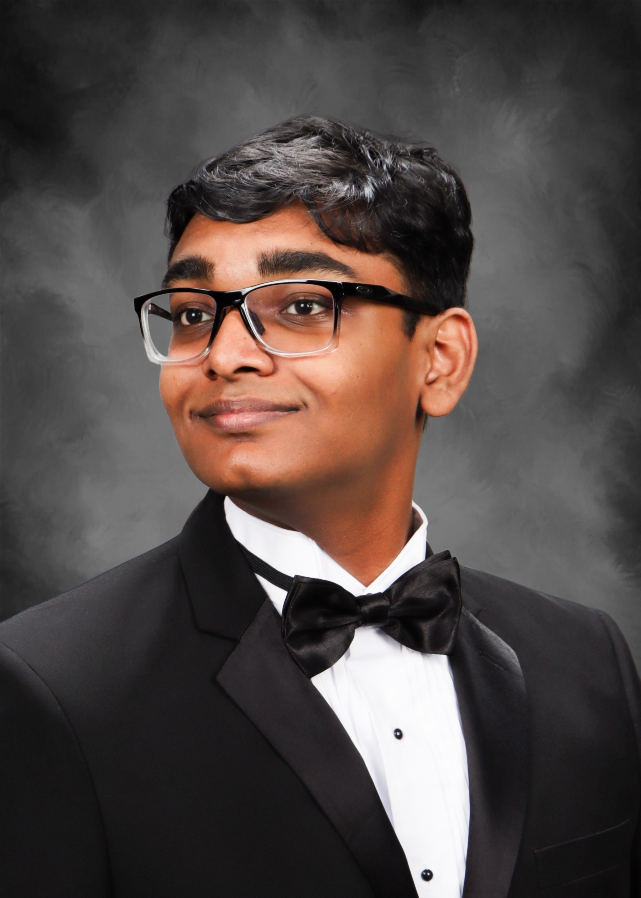
About me
I like hard problems with real-world consequences.
Hi, I'm Aryan — part engineer, part storyteller, and part “let's see if this works” experimenter. I've spent the last few years building everything from Bluetooth gadgets to tiny ion engines (yes, they work… mostly), and explaining them in a way that doesn't require a PhD or three cups of coffee.
When I'm not writing technical guides for Hackster.io or Arduino, you'll probably find me tinkering with Java code, designing user interfaces, or running a club meeting that somehow turns into a brainstorm about rockets. I love mixing tech skills (UI/UX design, embedded systems, Java development) with people skills (leadership, outreach, making complex things simple).
I like solving problems, teaching others, and occasionally making robots do my bidding. If it beeps, blinks, or launches into the sky, I'm interested.
- Focus
- Aerospace systems
Embedded hardware - Currently
- Building at the edge of
flight & electronics - Based in
- Texas, United States
In practice.
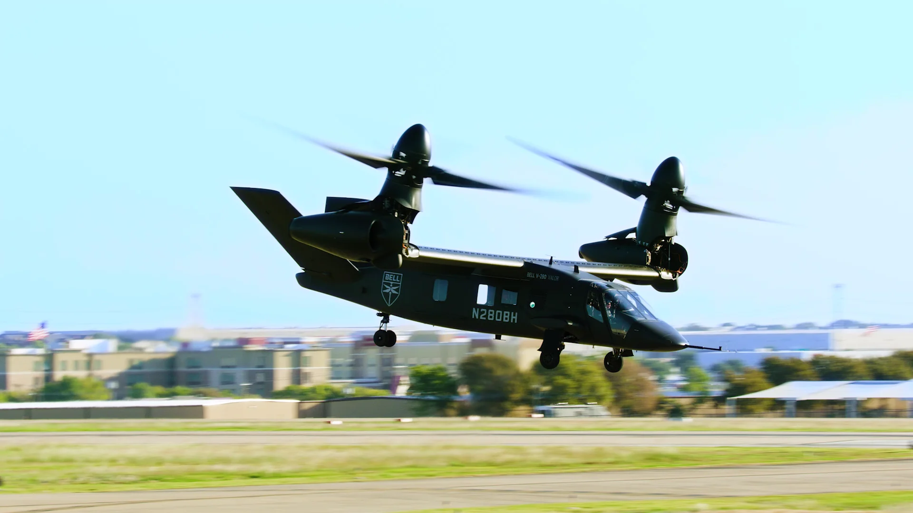
06/2026 — 08/2026 · Fort Worth, TX
Bell Textron
Instrumentation Engineering Intern
- Architected and integrated an RF telemetry network for flight test operations, delivering four real-time HD video streams and doubling data downlink throughput.
- Developed remote access for aircraft instrumentation systems over RF, expanding flight test capability.
- Implemented secure AES-256 telemetry communications to meet US Army standards.
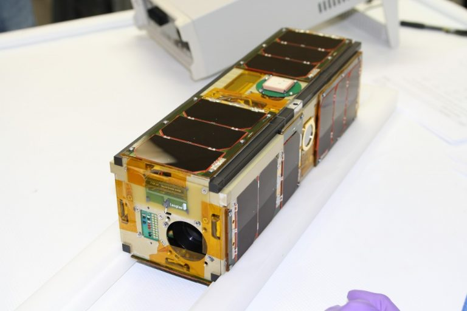
09/2025 — Present · Austin, TX
Texas Spacecraft Lab
Flight Software Engineer
- Developed C/C++ software integrating external CAN driver libraries into NASA’s satellite framework for real-time distributed power-unit telemetry.
- Implemented Docker cross-compilation for ARM-Linux, eliminating environment-specific build issues.
- Built an automated NASA systems-engineering training tool that reduced ramp-up time by 15%.
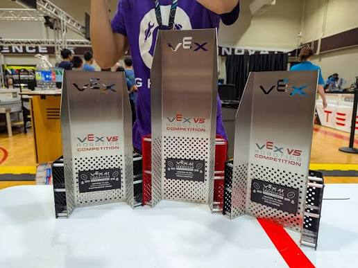
09/2025 — 03/2026 · Austin, TX
VEX U @ UT Austin
Robotics Software Developer
- Implemented a YOLO-based computer-vision pipeline in Python on an NVIDIA Jetson Nano for real-time game-object detection and autonomous decisions.
- Tuned PID control loops to reduce drivetrain oscillations and improve autonomous path tracking.
Things I’ve made.
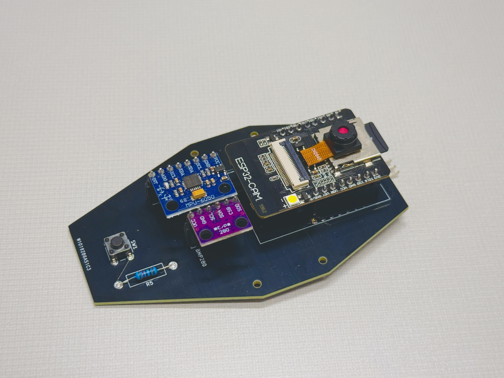
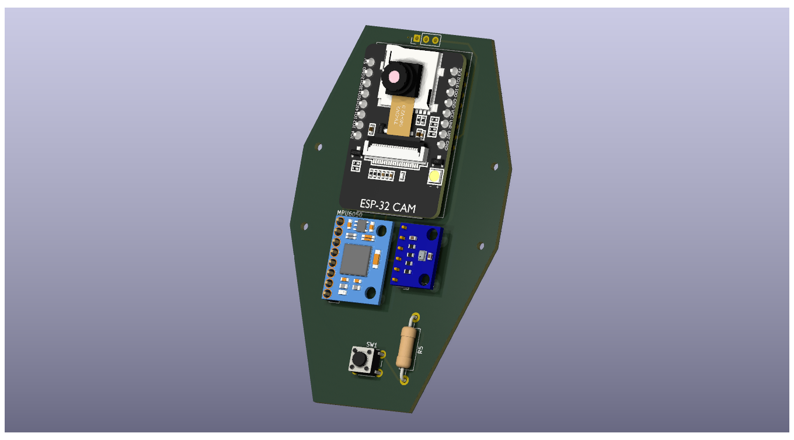
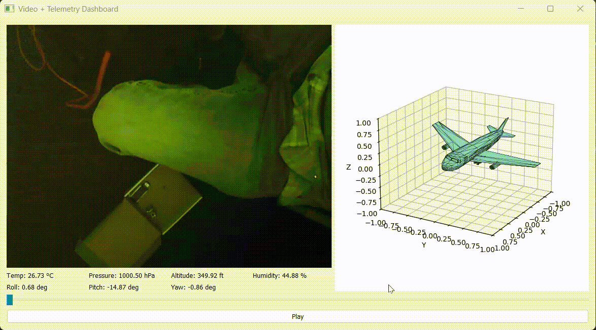
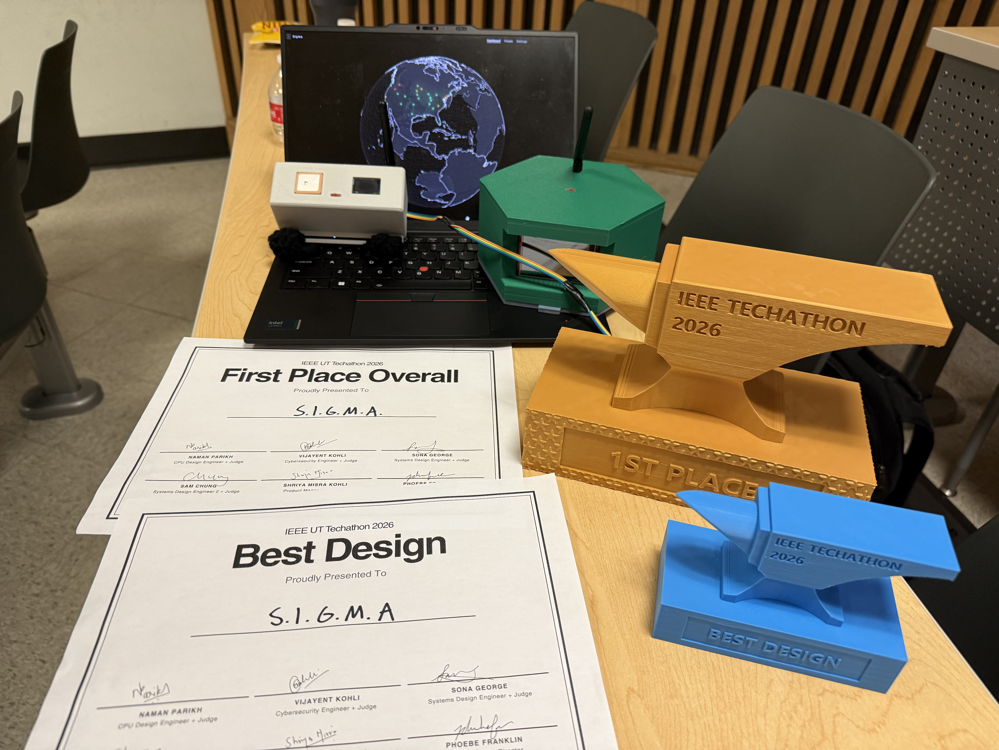
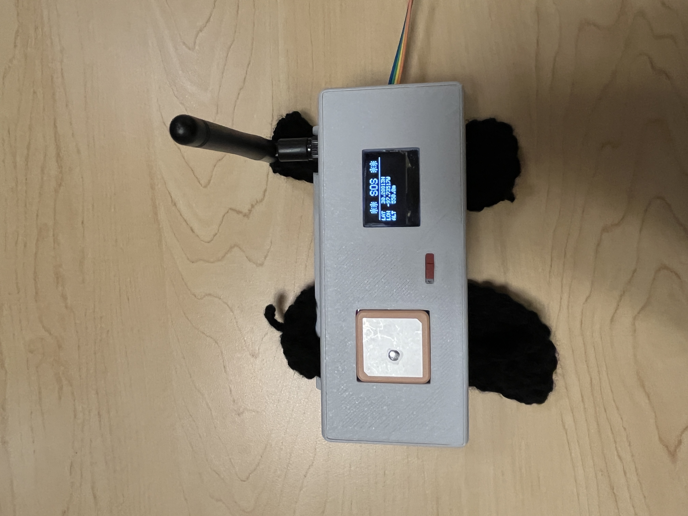
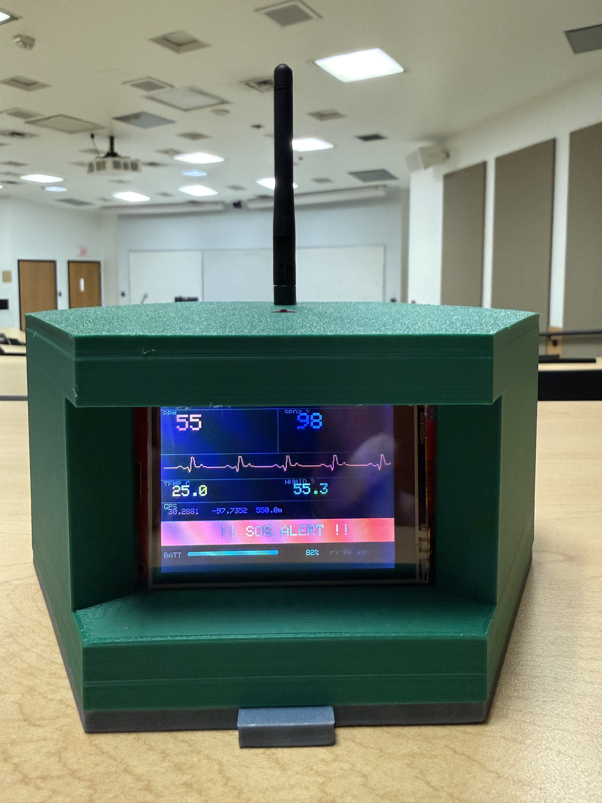
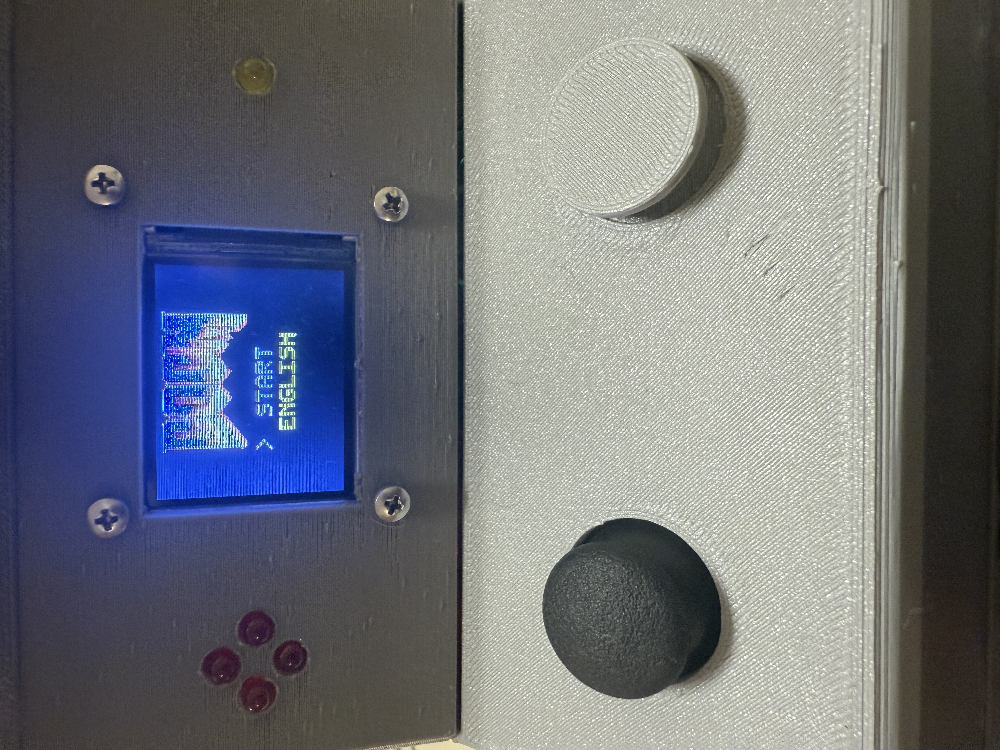
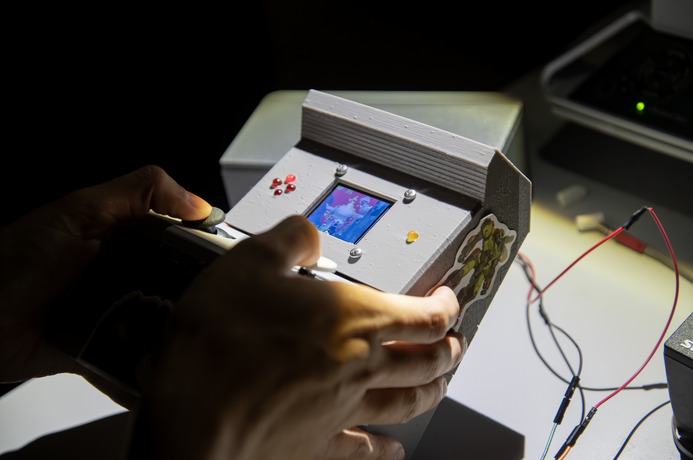
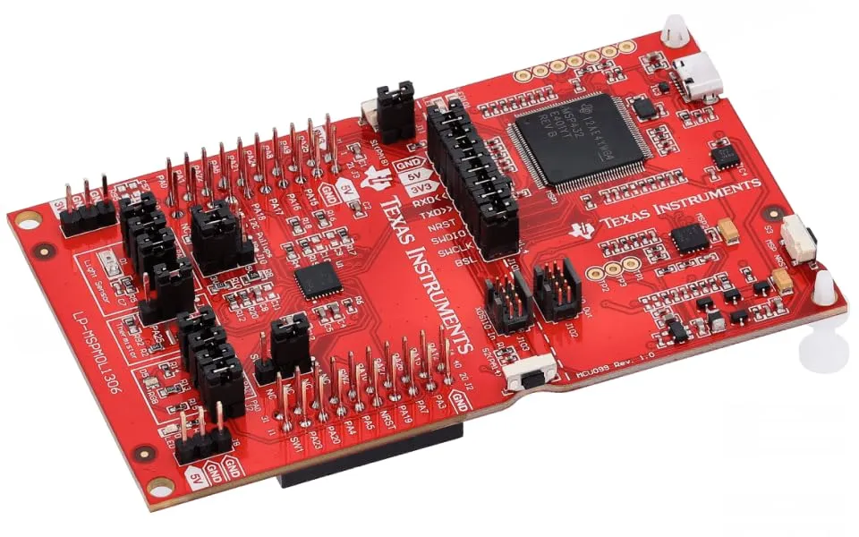
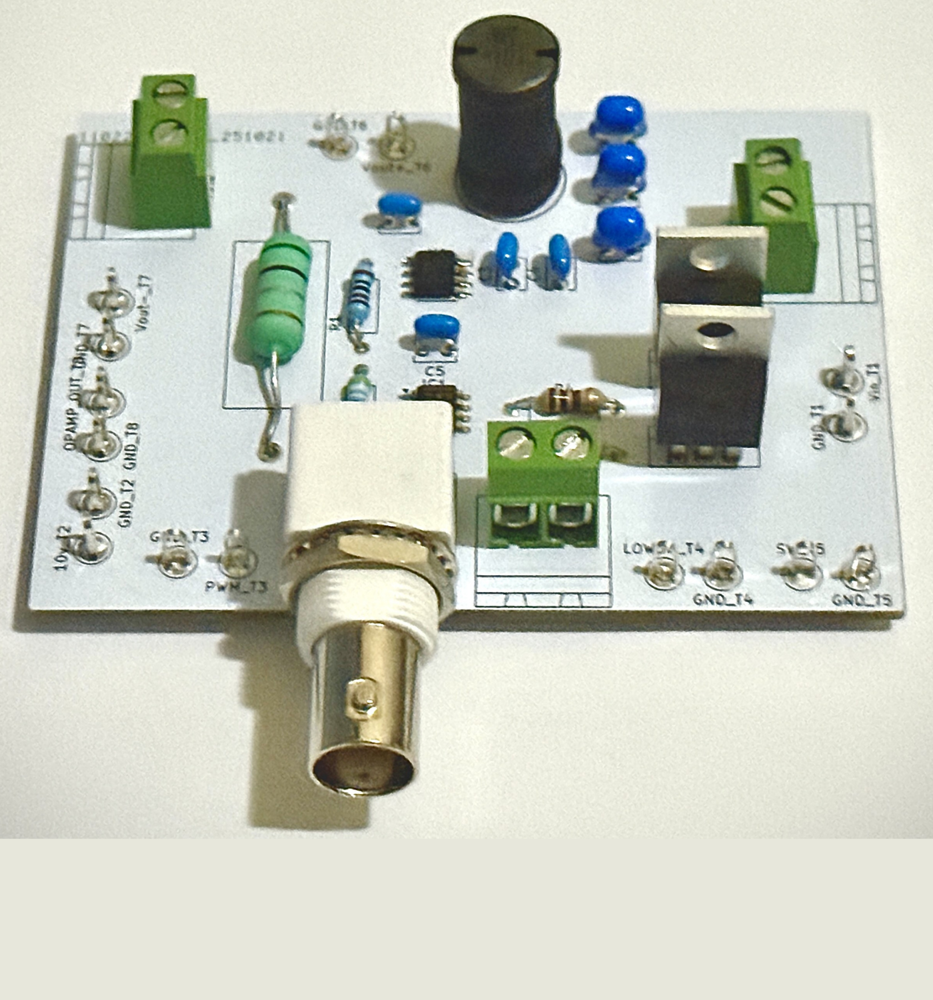
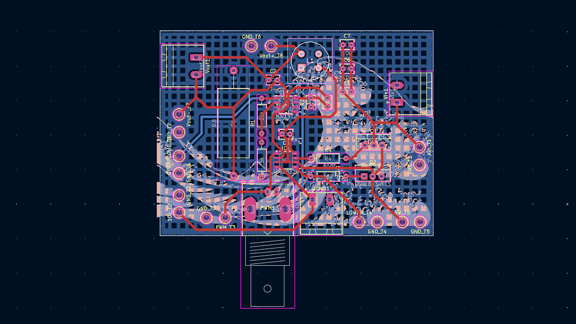
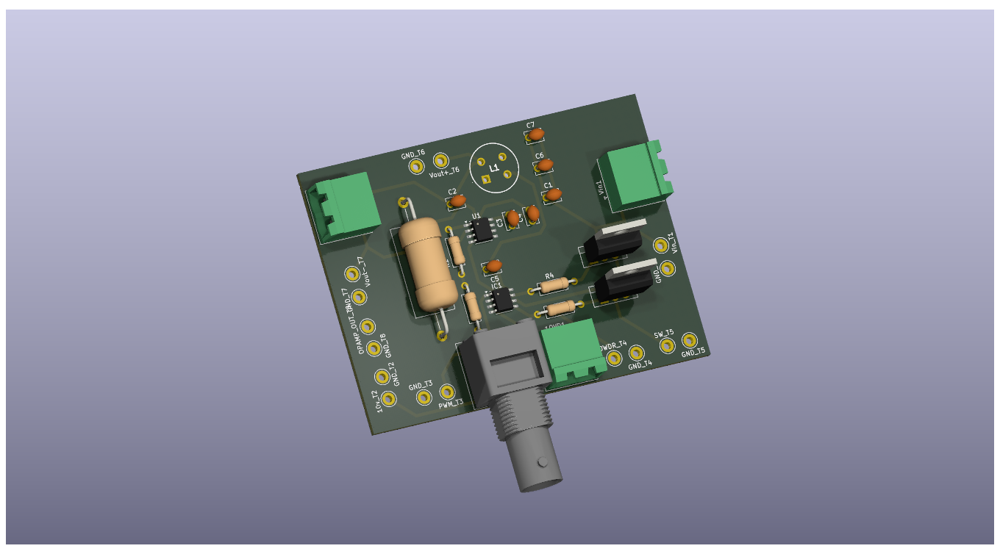